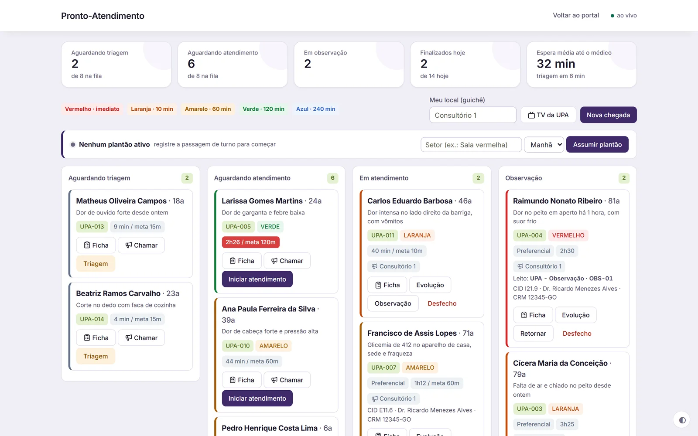
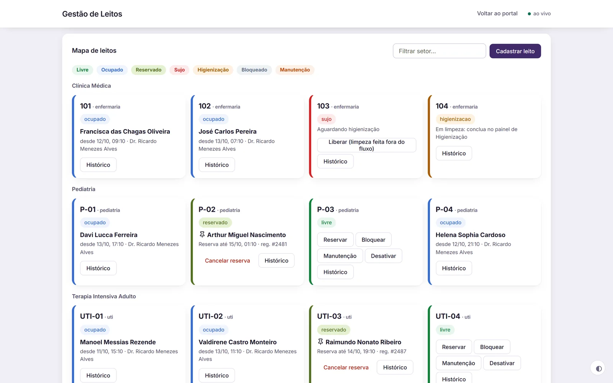
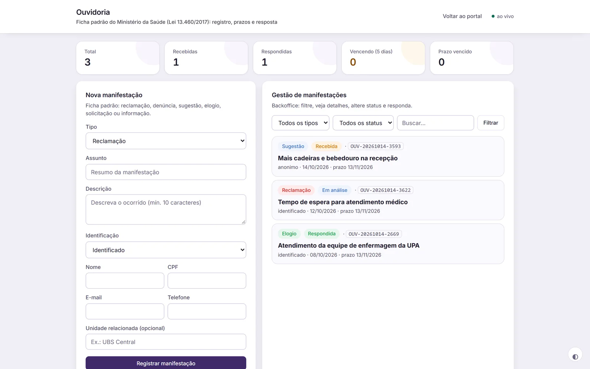

Classificação de risco
Fluxo da UPA da chegada ao desfecho, com triagem pelo protocolo de Manchester, discriminadores e metas de tempo por prioridade.
UPA e módulos hospitalares
Triagem com o protocolo de Manchester, ficha do paciente na observação e mapa de leitos com status e higienização, para a equipe saber o que está acontecendo agora.



O que faz na urgência e no hospital
Fluxo da UPA da chegada ao desfecho, com triagem pelo protocolo de Manchester, discriminadores e metas de tempo por prioridade.
Evolução, sinais vitais, prescrição com checagem, procedimentos, exames com resultado e vacina, no registro do paciente.
Mapa, censo, reserva e status de cada leito, para saber onde há vaga sem precisar ligar para o setor.
Cada leito passa por ocupado, sujo, em limpeza e livre, com o tempo médio de higienização calculado.
Checklist, etapas e protocolo, para que nada fique para trás antes da internação.
No padrão do Ministério da Saúde (OuvidorSUS): seis tipos de manifestação, sigilo, prazo de 30 dias da Lei 13.460 e consulta por protocolo.
Como funciona
Numa demonstração com dados fictícios, seguimos um paciente da classificação de risco até o leito liberado.